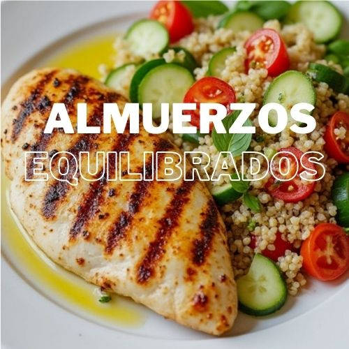

Ingredientes
- 2 pechugas de pollo
- 1 taza de quinoa
- 1 taza de brocoli
- 1 zanahoria
- 6 esparragos
- 2 cucharadas de aceite de tu preferencia
- 1 cuchara de semillas de sesamos
- Sal y pimineta al gusto
Instrucciones
- Enjuaga bien la quinoa bajo agua fría para quitarle el sabor amargo.
- Colócala en una olla con el doble de agua (2 tazas de agua por 1 taza de quinoa).
- a ebullición, luego baja el fuego y cocina a fuego lento durante 15-20 minutos o hasta que el agua se absorba y la quinoa esté suave. Agrega una pizca de sal al agua para darle sabor.
- Retira del fuego y deja reposar unos minutos.
- Dejar reposar durante 5 minutos.
- Añadir las frutas frescas y la miel por encima.
- Servir y disfrutar.
Preparar la quinoa:
- Lava y corta el brócoli, la zanahoria y los espárragos.
- En una sartén grande, calienta 1 cucharada de aceite de oliva y saltea las verduras durante 5-7 minutos, hasta que estén ligeramente doradas pero aún crujientes.
- Añade sal y pimienta al gusto. Reserva.
Preparar las verduras:
- Sazona las pechugas de pollo con las especias: sal, pimienta, comino, ajo en polvo, pimentón dulce y hierbas aromáticas (romero o tomillo).
- Calienta una parrilla o sartén con una cucharada de aceite de oliva.
- Cocina el pollo a la parrilla por 6-8 minutos de cada lado, hasta que esté bien cocido y dorado por fuera.
- Servir y Disfrutar.
Preparar el pollo:
Información Nutricional
| Calorías | 250 kcal |
|---|---|
| Proteínas | 6g |
| Grasas | 5g |
| Carbohidratos | 45g |
| Fibra | 8g |
| Azúcares | 12g |